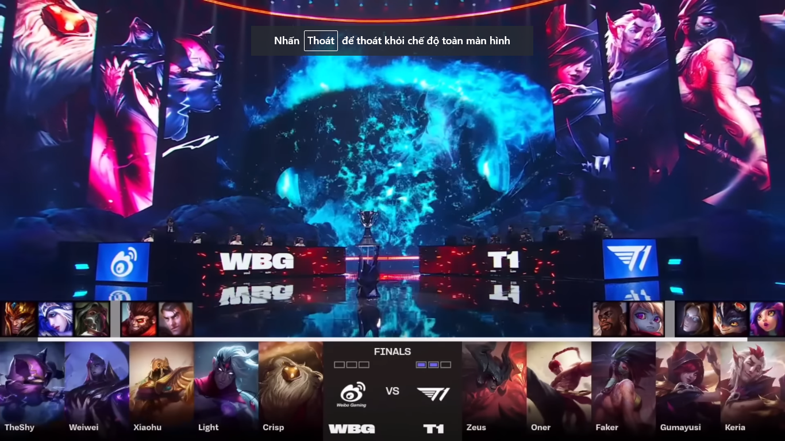
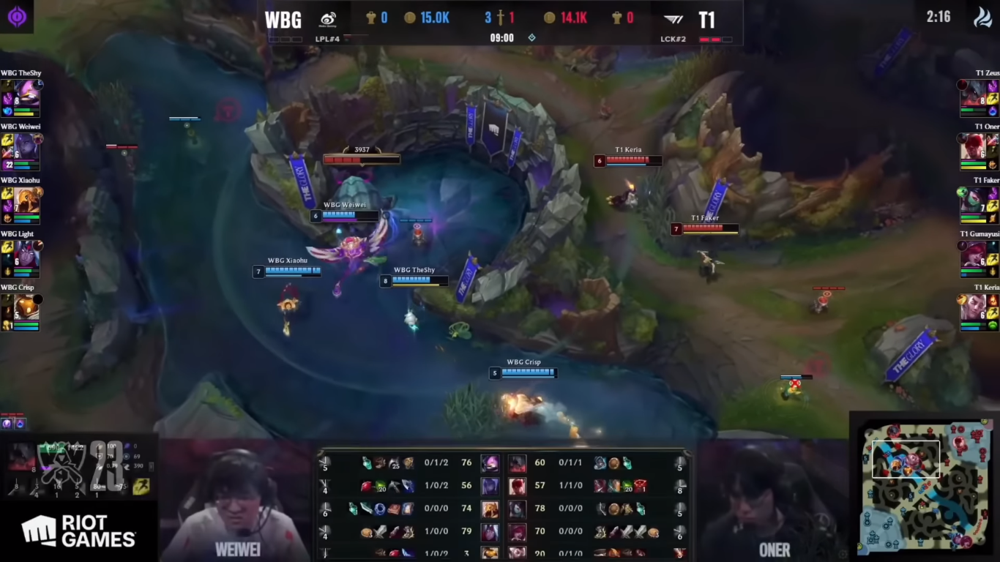
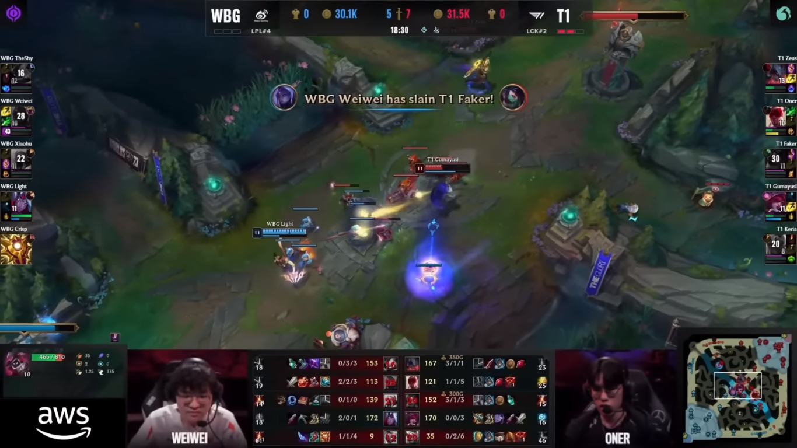
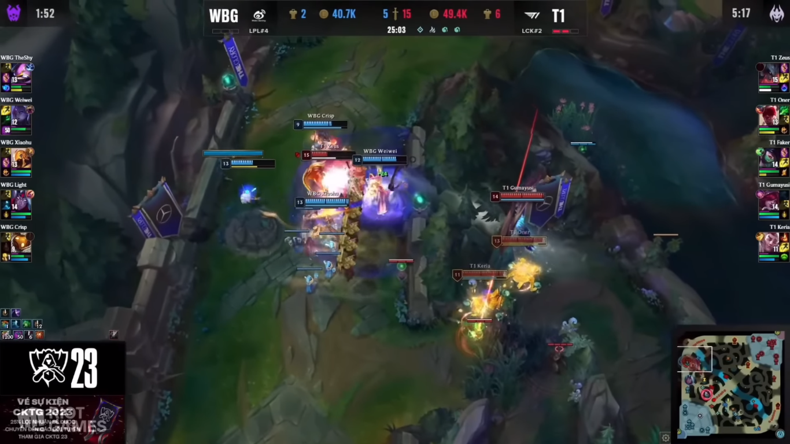
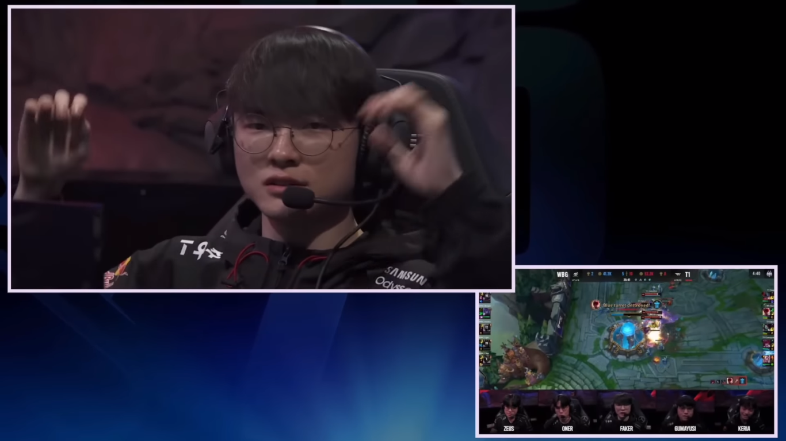

Ván đấu thứ ba
GAME 3 T1 vs WBG
Trong ván đấu thứ 3 WBG đã nhả con bài Aatrox vào tay Zeus và đó sẽ là sự ân hận nuối tiếc của họ sau khi nhìn thấy FMVP trình diễn trên sân khấu trận đấu cuối cùng của giải đấu.

Đầu trận kịch bản lặp lại, luôn là những lợi thế sớm dành cho WBG khi họ hơn về mạng gạ gục và tận dụng nguồn sức mạnh có trước để bắt đầu triển khai đội hình giao tranh để chiếm sứ giả đầu tiên của trận đấu.

Nhưng ngay ở pha giao tranh lớn sau đó tất cả lợi thế gần như biến mất, T1 quá xuất sắc căn bản là họ out trình hơn trong những pha combat với WBG Faker dễ dàng có đc 3 mạng hạ gục và lợi thế ngay lập tức được chuyển sáng cho T1.

Sau đó à làm gì còn sau đó Zeus cho Theshy hiểu thế nào mới là cách chơi Aatrox chuẩn bài khi có pha 1 đánh 4 và sóng sót cùng với 4 thành viên còn lại dập tắt hy vọng của WBG và cho họ được về nước sớm hơn 2 trận.

Ngay sau đó dịch chuyển được đầu tư và ván đấu được kết thúc để T1 chính thức lên ngôi vô đich.
